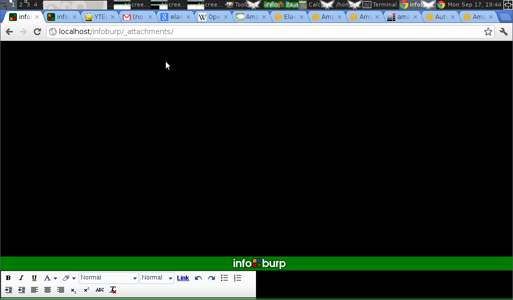
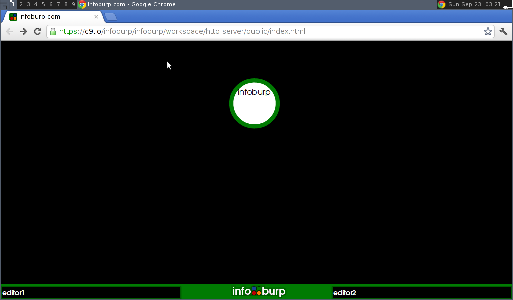

This document outlines the main goals and features of the infoburp project - an interactive Semantic Web tool. In essence, infoburp allows the user:
To browse through data available in the Web;
To manipulate these data by various methods;
To contribute the user's own data interleaving with the Global infosphere;
To represent the results in a highly interactive and easy to use way.
Everything is inside linked nodes.
Nodes can contain other nodes, links, data, repurposable widgets, like buttons, knobs, sliders and tick and textboxes, and others can contain visualisations, still other nodes contain headless js with the links denoting the data/program flow.
Every node has a URI.
Any node can link to any other node it knows the URI for.
In this way we can "plumb" programs and data together and build interesting custom interfaces referencing the data available (the WWW), and easily share the resulting customised interface with anyone online in a single hyperlink(back onto the WWW).
Everything is editable, including the editors.
The whole thing is a wysiwiki, so viewing and editing are in the same interface, and saving is as far as possible done without user intervention.
Any thing on the WWW (i.e. with a URI), can be added as a node.
Every interface is contained inside it's own node, and every interface is editable, to change the way it edits other nodes.
The interface is a fractal, it contains at it's simplest level just one node, that contains all that infoburp is aware of, and larger numbers of nodes inside the master node nested and by topic and relationship.
Examples
This can be best described by example.
Being a fan of Dmitry Hvorostovsky opera singer, I'd like to know what concert halls and opera houses Dmitry has visited throughout last years. I want to plot them as locations on the world map. And maybe, link one location to another, to display the path of Dmitry's travels. How can I accomplish this?
I can get world map from Wikipedia, Wolfram|Alpha, or Openstreetmap, and Hvorostovsky's travels are outlined in his Facebook page. But there isn't any clear way to interleave these data.
Here comes Infoburp. Using this tool, one can solve such problem in several easy steps.
Create a Facebook Connection node which links to Dmitry Hvorostovsky page and the list of his travels. Every item of this list is linked to a geographical location.
Connect it to a OpenStreetMap node. The geographical locations data are displayed on world map in a node, and it's just the result we were looking for.
Development progress
Now let's look at the development progress so far on infoburp in a series of screenshots and mockup images created over the last few months (in time order).
above each image is the question that lead to considering the option depicted in the image.
Where do I put text? (In nodes)
What do a few nodes linked together look like?
Is click and drag a good node/link add method (yes)
How might the editor look? Where might things be on the screen?
Can we click and drag to make several new nodes and link them together in an intuitive manner? (yes :).
Could we do some kind of window manager type things? Or is that too slow?
What do a few connected nodes with text in them look like?
Can we have a wiki style node editor to one side?
Can I make that look a bit better?
How might text be sized inside nodes?
Where could adverts go? Do we need a toolbar on the text editor?
Do adverts work in practice? What about QRcodes?
Will making the quiet zone bigger + contrast higher make the QRcode read more reliably? (yes)
Can I make the interface nicer? What about using closure editor?
Can infoburp be expanded in the future?
What about having 4 views on the screen?
Or two views?
Or three views?
How should 3 views look?
Does it work well with 3 views? (not really)

Can it scale up to lots of nodes? (yes, within limits)
How are graphs and trees similar?
Could we have url bars above each editor? (yes) Should we? (maybe)

Could we try a different logo?
Can nodes contain images and html? (yes)
Is it better to go back to basics with one editor? (yes, I think so)
What about nodes that perform tasks? Can data flow around the graph?
How might I search for new information? Can we put a SPARQL endpoint in a node?
How could I use infoburp to describe infoburp (meta :)
Does the interface work better when it's less cluttered? (yes)